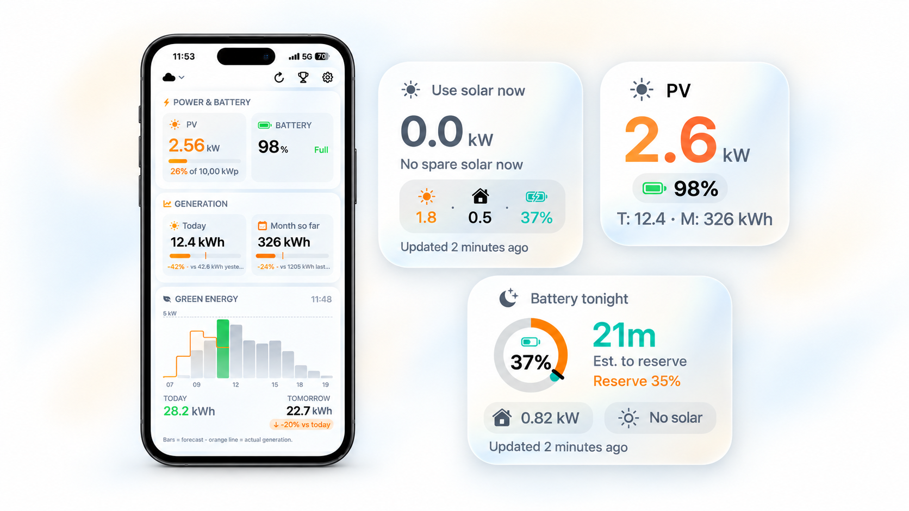

Glance for PV
Your solar system.
At a glance.
Live widgets keep your solar generation and battery levels up to date on your Home Screen and Lock Screen. See your energy at a glance, without opening the app.
For iPhone, iPad, Mac, and Apple Watch.

A closer look at your energy
More insight.
Just one glance.
Unofficial companion app. Not affiliated with Ginlong, Solis, Sofar Solar, SolaX Power, Growatt, or GoodWe.


Your energy, understood.
Every day.
Two Ways to Connect
- SolisCloud (cloud): sign in with your SolisCloud API keys and read your system from anywhere
- Modbus TCP (local): talk to your inverter directly on your home network, no cloud account required
- Works with Solis, Sofar, SolaX, Growatt, and GoodWe inverters
Live Widgets, Front and Center
- Home Screen widgets in small, medium, and large sizes
- Lock Screen widgets (circular and rectangular) for instant battery and power readouts
- Apple Watch complications and widgets, right on your wrist
- Compatible with iPhone, iPad, Mac, and Apple Watch
Everything You Need at a Glance
- Real-time PV power output in kW
- Battery state of charge with color-coded indicators
- Today and monthly PV generation
- kWh imported and exported
- Self-sufficiency %
- How long the battery will last (power outage or overnight)
- Last update timestamp, so you know the data is fresh
Solar Hub: Game Center for Solar
Game Center in a solar monitoring app is a genuinely new idea. Solar Hub turns your daily production into something you can actually compete on - globally, against other real installations.
- Fair no matter how big your system is: the Solar Efficiency leaderboard scores daily kWh per kWp installed, not raw output. A 3 kWp balcony array can outrank a 20 kWp roof - it rewards how well your system runs, not how much you spent on it
- Three leaderboards: Solar Efficiency, Self-Sufficiency, and Off-Grid - each normalized so location and installation size never decide the winner
- 13 achievements to unlock, from First Light and Bright Day to Peak Harvest, Peak Breaker, and Self-Reliant
- Fully opt-in and anonymous - your Game Center nickname is all anyone else ever sees
Siri, Shortcuts, and Spotlight
On iPhone, say “Hey Siri”, then ask one of these questions with the app name:
- Current power: “What's my PV generation in Glance for PV?” or “What's my solar generation in Glance for PV?” Hear your output in watts or kilowatts.
- Today's energy: “What's my solar generation today in Glance for PV?” Hear the energy generated today in kilowatt hours.
- Solar overview: “Check my solar in Glance for PV.” Hear current power, battery level, and today's generation when available.
- Battery level: “What's my battery level in Glance for PV?” Hear your home battery's charge as a percentage.
Use a shorter Siri phrase
Built-in phrases include “Glance for PV”. To ask just “What's my PV generation?” or “What's my solar generation?”, set up a personal shortcut:
- Open Apple's Shortcuts app and create a new shortcut.
- Add Glance for PV's Get PV Power action.
- Name it What's my PV generation or What's my solar generation. Create a second shortcut if you want both names.
- Say “Hey Siri”, followed by the shortcut's name.
Find actions in Spotlight or build a shortcut
Swipe down on the Home Screen and type or dictate “solar generation”, “PV power”, or “battery level”. Tap the matching Glance for PV action to run it. Dictation enters your search; it does not automatically run the action.
In Shortcuts, look for Check Solar Status, Today's Generation, Get Battery Level, and Get PV Power. PV power returns a number in kilowatts; battery level returns a percentage. Use these values in conditions inside shortcuts or automations you configure.
Requires inverter setup and unlocked live updates. Commands are currently in English. Answers use a recent reading when available and may use the last saved reading if your inverter cannot be reached.
Live Auto-Refresh
A one-time in-app purchase unlocks live auto-refresh across every widget size. Without it, widgets still install and display your system, but data stays frozen - so you see exactly what you'll get before you decide.
Private and Direct
- Your credentials stay on-device
- Glance talks to SolisCloud directly from your iPhone, iPad, Mac, or Apple Watch - or speaks Modbus TCP straight to your inverter on your local network
- No middle server, no account signup, no tracking, no analytics, no ads
Unofficial Companion
Not affiliated with Ginlong, Solis, Sofar Solar, SolaX Power, Growatt, or GoodWe. Glance for PV is an unofficial third-party companion app. Use it with a SolisCloud account or any supported inverter reachable over Modbus TCP on your local network.
Requirements
- iPhone, iPad, Mac, or Apple Watch
- A SolisCloud account with API access - or a supported inverter (Solis, Sofar, SolaX, Growatt, GoodWe) reachable over Modbus TCP on your local network
- One-time in-app purchase for live auto-refresh (optional)
Your Solar System, at a Glance
Live PV generation and battery state-of-charge on your Home Screen and Lock Screen. Ask Siri, automate it with Shortcuts, and see how your system stacks up worldwide. Private, direct, and always one look away.
The Android version is awaiting Google Play approval. The Privacy Policy and Terms of Use below cover both Apple and Android versions.